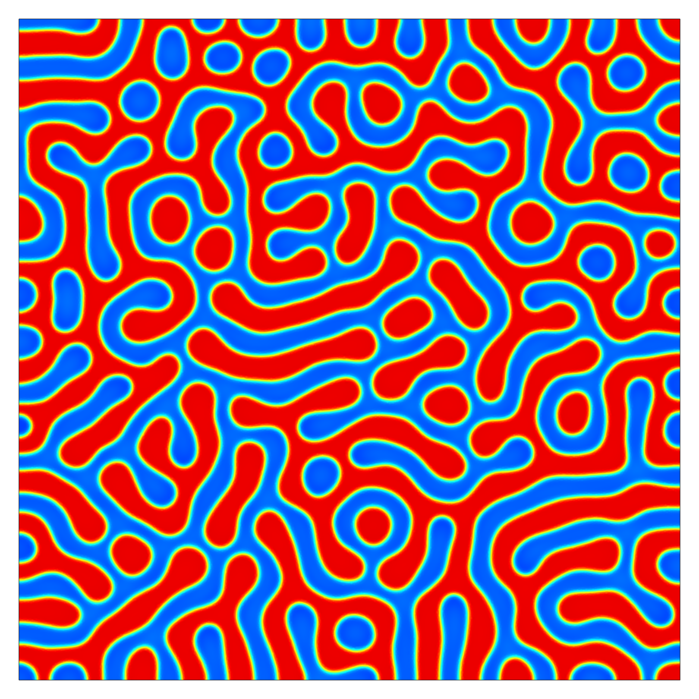

About me
I am a PhD student at Saarland University in the group of Prof. Dr. Heiko Rieger . My main field of interest is theoretical and statistical biophysics. I am interested in non-linear and non-equilibrium phenomena in physics. This includes a wide range of problems in theoretical biophysics and statistical physics. My recent academic interest is stochastic thermodynamics and its connection to information geometry. The research topics I would primarily like to work on are stochastic thermodynamics, non-linear dynamics, stochastic processes, information theory and soft condensed matter.
Short CV
- Nov 2023 - Present | Doctoral researcher at Saarland University
- Nov 2020 - Nov 2022 | Doctoral researcher at University of Luxembourg
- Oct 2017 - April 2020 | Master of Science in Physics, LMU München
- July 2013 - May 2017 | Bachelor of Technology in Engineering Physics, IIT Delhi
- June 2013 | All India Rank 1474 in IIT-JEE 2012-13
My full CV
Research Interests
Projects
Master's Thesis - Mechanochemical co-operativity and pattern formation

In many intracellular processes, the recruitment of proteins to the membrane and the pattern formation of proteins plays a crucial role. In addition, the presence of more than one protein species is another a vital component of protein pattern formation. Recently, a model for feedback recruitment of the cytosolic proteins was proposed assuming a mechanochemical coupling between proteins and phospholipid membranes [Phys. Rev. Lett. 123, 178101 (2019)]. The role of more than one such protein species for such a theoretical model is yet elusive. Here, we propose a model for the pattern formation of two different protein species which interact mechanochemically with phospholipid membranes. Our model reveals a rich phase diagram with different phases characterising the domination of either protein species or a coexistence regime leading to pattern formation. In a long time limit, coarsening of patterns results in phase separation. Further, we introduce a spontaneous switching between membrane-bound states of different protein species which reveal micro-phase separation for our model.
Publications
2026
A. T. Mohite, H. Rieger
Physical Review E 113, 064136
A. T. Mohite, H. Rieger
Physical Review E 114, 014103
Generalized finite-time optimal control framework in stochastic thermodynamics
A. T. Mohite, H. Rieger
Physical Review Research 8, 033340
2025
A. T. Mohite, H. Rieger
arXiv:2508.11430
A. T. Mohite, H. Rieger
arXiv:2511.00967
K Proesmans, G Falasco, AT Mohite, M Esposito, E Fodor
Physical Review E 112, 024103
Contact Me
Saarland UniversityDepartment of Theoretical Physics and Center for Biophysics
E 2.6, Saarbrücken
66123, Germany
- Room: 1.04
- Email: atul.mohite@uni-saarland.de
- Phone: